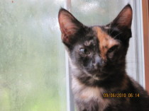

Our Mission
Wags to Whiskers of Texas, Inc. is a non-profit, no-kill animal rescue whose purpose is to save the lives of cats and kittens by finding them loving, caring forever homes.

We believe that every animal deserves a second chance. Through dedicated fostering, community adoption events, and the generosity of our volunteers and donors, we are able to provide medical care, safe shelter, and loving temporary homes until each animal finds their forever family.
We were founded right here in Texas with a simple belief: no healthy or treatable animal should ever lose their life simply because they ran out of time. That belief drives everything we do.
What We Do
- Rescue cats and kittens from high-intake shelters and the streets
- Provide full veterinary care — vaccines, spay/neuter, treatment
- Place animals in loving foster homes while they await adoption
- Host Saturday adoption events at PetSmart locations throughout the Houston area
- Educate the community on responsible pet ownership and animal welfare
Our Values
We are entirely volunteer-driven. Every dollar donated goes directly toward the animals — their food, medical bills, supplies, and care. We are transparent, compassionate, and relentless advocates for the animals entrusted to us.